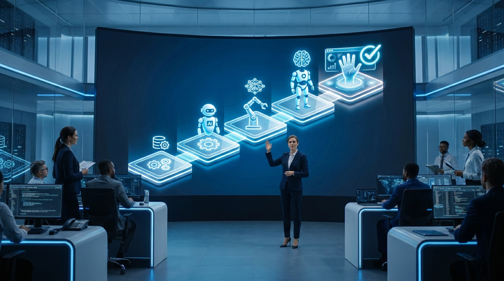

"Increase autonomy in stages, and prove your controls in production before moving up."
— The consistent advice across 2026 enterprise AI maturity research
Everyone is talking about the autonomous enterprise, the company where AI agents run whole processes end to end. Almost no one has built one. Fewer than 3% of enterprises have reached full autonomous operations, while 40 to 50% are still stuck at the very first stage, running ad hoc experiments. And the road between those two points is littered with failures: 88% of AI agent projects never reach production at all. The autonomous enterprise is real and it is coming, but it is a staged journey, not a switch you flip. Here is the practical roadmap, the five maturity stages from first pilot to orchestrated autonomy, the timeline and budget realities, and the one discipline, governance, that decides which companies actually arrive.

Where Enterprises Actually Are Today
Before plotting the route, it helps to be honest about the starting point. Despite the hype, only about 17% of organizations have actually deployed AI agents, though more than 60% expect to within two years, and 93% of IT leaders say they intend to introduce autonomous agents in that window. Gartner expects 40% of enterprise applications to carry task-specific AI agents by the end of 2026, up from less than 5% in 2025, and Deloitte projects that half of enterprises using generative AI will deploy autonomous agents by 2027, double the 25% seen in 2025. The direction is not in doubt. The execution is where companies diverge.
The Five Stages of Autonomous Maturity
The clearest way to think about the journey is as a five-stage maturity model, with organizations scoring themselves across dimensions like infrastructure, governance, data, talent, culture, and outcomes:
Stage 1, Exploration. Leadership awareness is emerging and teams run ad hoc experiments. This is where 40 to 50% of enterprises sit right now.
Stage 2, Experimentation. Dedicated teams run structured pilots, though success metrics are still basic and inconsistent.
Stage 3, Integration. Agents are deployed in production for specific, well-defined workflows, and formal governance processes are established. This is the threshold where AI stops being a science project.
Stage 4, Orchestration. Multiple agents operate across functions and actively coordinate, sharing context and triggering each other, much like the observe-plan-act-reflect loop that powers individual agents, now running at organizational scale.
Stage 5, Autonomous Operations. Agents manage end-to-end business processes, with human oversight reserved for exceptions. Fewer than 3% of enterprises have reached this stage.
Key Takeaway
The gap between Stage 1 and Stage 5 is not mostly about model quality. It is about data readiness, governance maturity, and organizational capability. The companies that stall are almost always stuck at the Stage 2 to Stage 3 transition, the move from impressive pilots to reliable production.
The Phased Roadmap: Timelines and Budgets
Maturity stages describe where you are; an implementation roadmap describes how to move. A typical enterprise program runs across five phases over roughly two to three years. It starts with a Foundation phase (about months 1 to 4) to set strategy, name an executive sponsor, run a maturity assessment, and audit data readiness. Then a Pilot phase (months 4 to 10) proves value through two or three focused use cases, typically consuming 25 to 35% of the budget and aiming for adoption above 40% of the target users. The Scaling phase (months 10 to 18) is the peak-investment period, 35 to 45% of budget, where you build platform architecture, stand up MLOps and LLMOps processes, and get five to ten use cases into production. Enterprise Integration (months 18 to 30) embeds AI into core processes and begins true agentic pilots, and a final Continuous Optimization phase sustains it, with mature operators in tech-forward industries spending around 3 to 4% of revenue on ongoing AI operations.
This is the same disciplined sequencing that separates winners from losers in any major technology program, a pattern we explored in our broader digital transformation roadmap. The autonomous enterprise is digital transformation with the autonomy dial turned up, and the planning rigor matters more, not less.
The Governance Backbone: Match Autonomy to Access
Here is where most roadmaps quietly fail. In May 2026, Gartner warned that applying uniform governance across all AI agents, regardless of their autonomy level and scope, will itself cause enterprise AI agent failure. The critical distinction is between an agent's ability to act and the scope of access it is granted. A Level 1 "observe" agent, for example, should have read-only access to defined data sources, with output visible only to the person who asked. As an agent earns more autonomy to act, its access and its guardrails, confidence thresholds, circuit breakers, audit trails, rapid human intervention, have to scale with it deliberately. This is the same governance discipline that decides outcomes in finance system overhauls, as we covered in our look at governance pitfalls in S/4HANA Finance transformations.
Why Most Agentic Projects Will Be Pulled Back
Gartner predicts that by 2027, 40% of enterprises will demote or decommission autonomous AI agents because of governance gaps discovered only after a production incident, and notes that only one in five companies has a mature governance model for autonomous agents today. Governance is not the brake on the autonomous enterprise. It is the steering.
The Failure Patterns to Design Around
The roadmap is as much about avoiding predictable traps as hitting milestones. Three patterns account for most stalled programs. First, the integration trap: strong models lose accuracy on messy production data, and roughly 80% of the real work turns out to be data preparation. Second, the adoption cliff: 57% of organizations cite skill gaps as a primary barrier, so capability building has to be funded as seriously as the technology. Third, the governance gap, treating governance as a compliance checkbox rather than operational infrastructure. There is even a notable build-versus-buy signal here: MIT research in 2025 found purchased AI solutions succeeded around 67% of the time versus just 22% for internal builds, making that one of the highest-leverage decisions on the whole roadmap.
What the Destination Actually Looks Like
It is worth grounding the abstraction in what autonomy delivers when it works. Gartner expects 15% of day-to-day work decisions to be made autonomously by 2028 and 80% of common customer service issues to be resolved autonomously by 2029. We have already seen early, concrete versions of this, from Foxconn wiring hundreds of agents directly into its factory floor to the broader shift toward predictive systems that act on their own forecasts. The autonomous enterprise is not one giant leap; it is the accumulation of many well-governed agents each taking over a bounded slice of work.
The Bottom Line
The roadmap to the autonomous enterprise is not a mystery, and it is not primarily a technology problem. It is a staged climb: explore, experiment, integrate, orchestrate, and only then operate autonomously, with governance and data readiness carrying the weight at every step. The fact that fewer than 3% have reached the top is not a reason for caution so much as a map of where the value still is. The companies that treat autonomy as a disciplined journey, increasing it in stages and proving their controls in production before moving up, are the ones who will be running the autonomous enterprise while everyone else is still talking about it.